TFM. MASTER CIENCIA Y TECNOLOGÍA DEL PATRIMONIO ARQUITECTÓNICO
Una puerta que sólo se lee con luz invisible
Fotografía técnica e imagen hiperespectral aplicadas al estudio de una puerta renacentista policromada del fondo museístico de la Alhambra
Dos hojas de madera tallada y policromada, guardadas fuera de la vista del público, conservan restos de una decoración renacentista de marmolados y motivos vegetales. Este estudio las documenta sin tocarlas: fotografía técnica, imagen hiperespectral y un modelo tridimensional para leer lo que el ojo no puede alcanzar.
Cuatro maneras de mirar la misma puerta
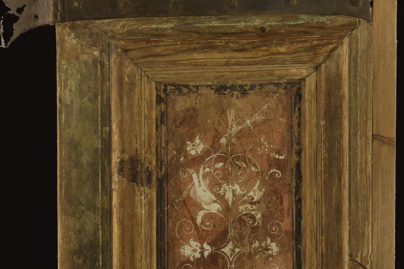
La pieza
Qué es, cómo está construida y qué se sabe —y qué no— de su origen: dos hojas del siglo XVI, sin ubicación original documentada, catalogadas en 2010 y restauradas en 2018.
Leer más →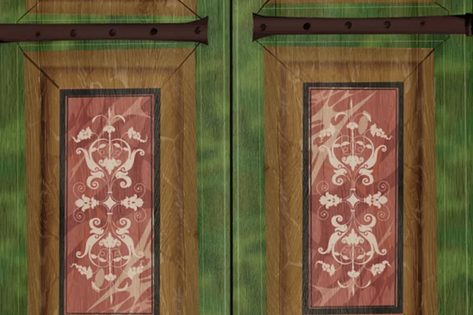
Recreación
Fotogrametría de las cuatro caras, ortofotografías métricas y una propuesta visual de cómo pudo verse la puerta cuando su policromía estaba completa.
Leer más →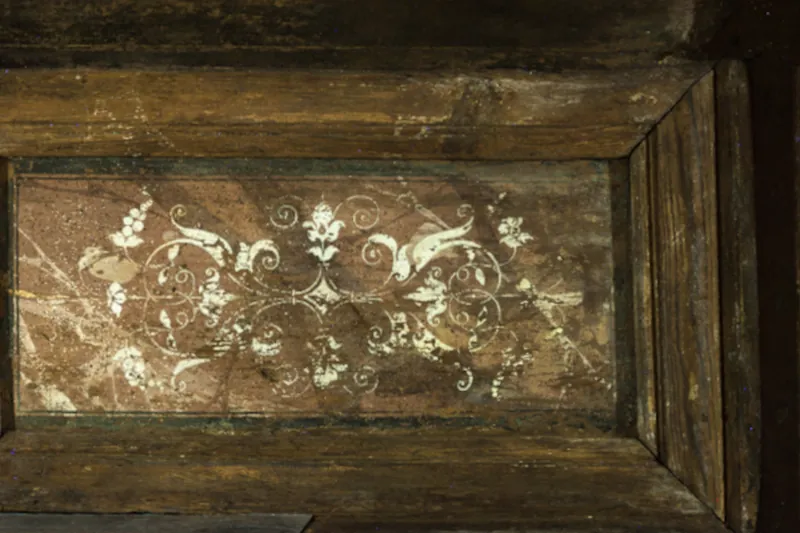
Fotografía técnica
La misma superficie en cuatro rangos del espectro: visible, fluorescencia ultravioleta, ultravioleta reflejado e infrarrojo. Compara tú mismo lo que cambia.
Leer más →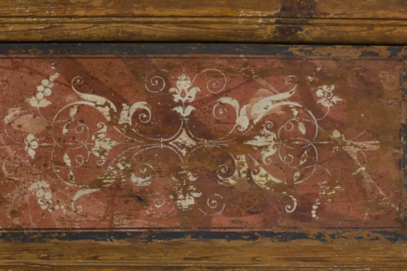
Imagen hiperespectral
Veinticuatro cubos de datos, veintinueve firmas espectrales y cuatro algoritmos para separar madera, injertos y pigmentos sin tomar una sola muestra.
Leer más →La pieza
Dos hojas sin dirección conocida
Una puerta renacentista que nadie sabe de qué habitación salió, y que sólo en 2018 recuperó el aspecto que hoy permite estudiarla.
El objeto de estudio es una puerta de dos hojas, de madera tallada y policromada, de estilo renacentista, conservada en los fondos del Museo de la Alhambra. Durante décadas fue una pieza de almacén: en 2018, el equipo del departamento de restauración de madera del Patronato de la Alhambra y Generalife llevó a cabo una intervención que reveló una calidad técnica y una belleza hasta entonces desconocidas. Bajo capas de yeso y de pintura rojiza aplicadas en algún momento indeterminado de su historia, apareció una decoración renacentista de marmoleados, motivos vegetales y perfiles oscuros.
Cada hoja cuenta hoy con una ficha de inventario individual en el Sistema de Documentación y Gestión Museográfica (DOMUS), donde se recogen su materialidad, su técnica de ejecución, sus medidas generales y documentación fotográfica. Pero esa ficha deja abiertas dos preguntas que este estudio no ha podido cerrar: no consta la fecha de ingreso de la pieza en los fondos del museo —la fecha que figura corresponde a su catalogación, no a su entrada— ni se conoce su emplazamiento original dentro del conjunto palaciego.
- Objeto
- Puerta de dos hojas, tallada y policromada
- Cronología
- Probablemente siglo XVI
- Dimensiones
- Hoja 1: 196,6 × 44 × 7 cm · Hoja 2: 197,6 × 45,5 × 8,5 cm
- Catalogación en DOMUS
- 19 de abril de 2010
- Fecha de ingreso
- No determinada
- Ubicación original
- No determinada
- Ubicación actual
- Fondos del Museo de la Alhambra
- Última intervención
- 2018, departamento de restauración de madera del Patronato de la Alhambra y Generalife
Cómo está construida
Las dos hojas son independientes, pero fueron concebidas como partes complementarias de un mismo cierre. Cada una se organiza en tres cuerpos separados por travesaños horizontales; los paneles quedan enmarcados por largueros verticales y travesaños, y entre unos y otros median molduras escalonadas que resuelven la transición entre la estructura perimetral y los cuarterones.
Desde el punto de vista constructivo se trata de una estructura de marco y panel: la disposición de largueros y travesaños, y sus ensambles de machihembrado y de caja y espiga, dejan los paneles enmarcados por el resto de la estructura sin fijarlos rígidamente. Es una solución deliberada. La madera de los cuarterones puede moverse con los cambios de humedad sin agrietarse ni empujar contra el marco, lo que explica en buena medida que la pieza haya llegado entera hasta hoy.
Los herrajes cuentan otra historia
Sólo una de las hojas —la que aquí se identifica como Hoja 2— conserva parte de su sistema de articulación: tres de las cuatro bisagras de banda que originalmente sostenían la puerta. Están realizadas en hierro forjado y presentan palas alargadas fijadas a la cara de la hoja mediante clavos de características distintas entre sí.
El estado de conservación de esas tres bisagras es desigual y muy revelador. La correspondiente a la posición inferior se ha perdido por completo. La tercera es la única que conserva íntegramente su pala y su terminación decorativa. En la segunda posición hay una pieza de menor longitud, que parece haber sustituido a una bisagra original más larga. Y en la posición superior se conserva parte de la pala de una bisagra grande, comparable a la tercera, junto a un elemento añadido más corto. Las dos piezas cortas tienen dimensiones aproximadas, pero la forma de sus extremos decorativos indica que no son elementos idénticos.
Esa heterogeneidad apunta a reparaciones, sustituciones parciales o adaptaciones funcionales realizadas en distintos momentos, aunque la documentación disponible no permite determinar la causa concreta de cada cambio. En el hueco que dejó la pala de la tercera bisagra se conservan restos de policromía: la pintura estaba allí antes que el herraje, o al menos antes que esa versión del herraje.
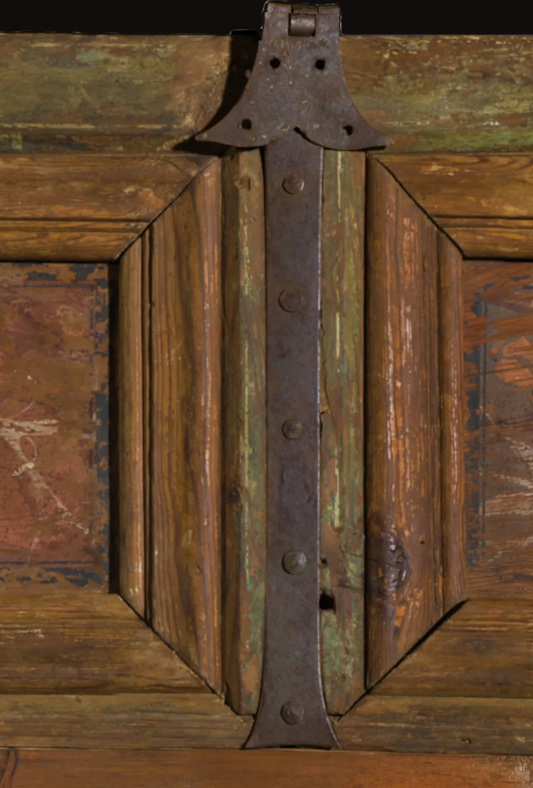
Una policromía por capas
La decoración distingue con claridad las dos caras y las dos funciones de la madera. Las molduras llevan una policromía marrón, de tonos cercanos a los de la propia madera. Los largueros y travesaños de ambas hojas están decorados con una imitación de mármol de tonalidad verde, de aspecto más noduloso que el de los fondos de los cuarterones. El perímetro de los elementos estructurales se resalta con una fina línea de verde más claro, que delimita visualmente los marcos y unifica la composición de cada hoja.
Los cuarterones centrales de las caras anteriores llevan fondos marmoleados rojos sobre los que se dibujan motivos vegetales en blanco, perfilados por trazos negros. Las caras posteriores presentan una talla de pergamino plegado, con fondos marmoleados en blanco y en rojo y bandas de color que siguen el relieve.
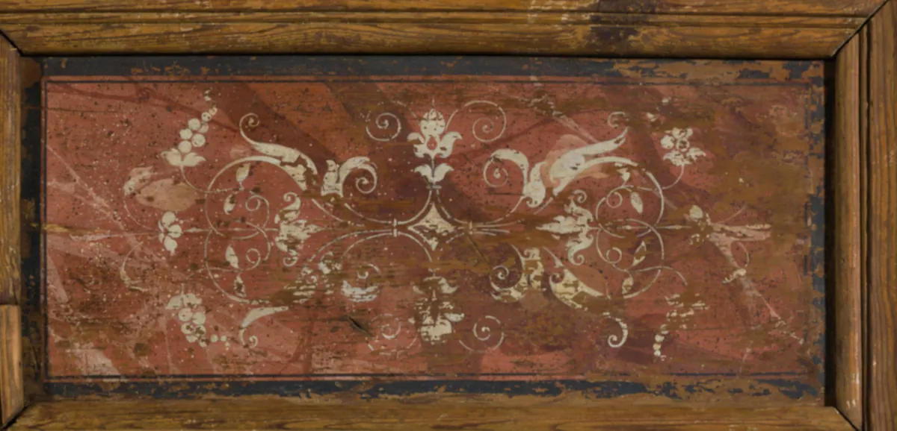
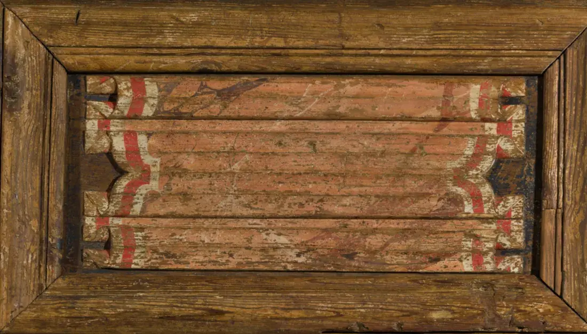
En las zonas de desgaste y en las lagunas no se distingue una capa de preparación claramente diferenciada entre el soporte y la policromía. Eso no permite descartar que exista una capa de cola o apresto: la bibliografía técnica señala que las preparaciones sobre madera pueden tener composición y espesor muy variables, e incluir capas aislantes de cola destinadas a regular la absorción del soporte antes de aplicar las capas pictóricas. Confirmarlo requeriría análisis estratigráficos que este estudio, por su carácter no invasivo, no ha realizado.
Lo que sí puede reconocerse es la secuencia de ejecución. Primero se aplicaron los colores planos que constituyen los fondos; sobre ellos se dispusieron los veteados del marmoleado; y por último se ejecutaron los dibujos y delineados que completan la decoración. Tres gestos superpuestos, en ese orden.
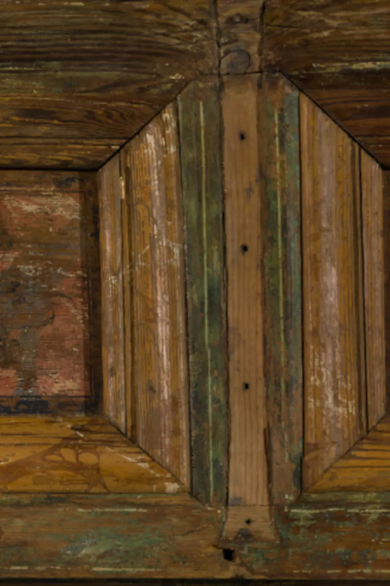
Qué dicen los archivos
La presencia de fondos marmoleados, motivos vegetales y elementos del repertorio clasicista permite relacionar la puerta, desde una perspectiva formal, con la transformación de la Alhambra durante el reinado de Carlos V. Entre 1530 y 1546, diversos espacios nazaríes se adaptaron a nuevos usos cortesanos y recibieron programas decorativos renacentistas: la torre del Peinador de la Reina se reformó hacia 1530–1537 y se decoró entre 1539 y 1544; las Habitaciones del Emperador se concluyeron en 1537 (Galera Andréu, 2000). Ambos espacios conservan pinturas murales renacentistas de tema histórico y mitológico, probablemente realizadas por los italianos Julio de Aquiles y Alejandro Mayner.
Gómez Moreno (1888) documenta que el trabajo de estos artistas no se limitó a la pintura mural, sino que alcanzó también elementos de madera integrados en la arquitectura. Entre las partidas de pago solicitadas a Pedro Machuca figuran, en el Peinador de la Reina, tres puertas y una ventana «pintadas y barnizadas» (p. 140). El dato es significativo para este estudio: demuestra que en la Alhambra del siglo XVI las puertas no eran meros elementos funcionales de cierre, sino soportes incorporados al programa ornamental renacentista.
Un segundo documento ilumina el otro extremo de la historia. En 1794, con motivo de la rehabilitación de las Habitaciones del Emperador para alojar al conde de Aranda, se documentaron intervenciones sobre las puertas de las estancias: sustitución o incorporación de cerraduras, pasadores, trinquetes, picaportes, aldabas, palanquetas y cerrojos. Algunas puertas fueron además repintadas «color yeso mate y cola» y otras «de color caoba» (Vilar Sánchez, 2013, p. 648). Es decir: los elementos de carpintería de la Alhambra experimentaron modificaciones funcionales y cromáticas muy posteriores a su ejecución.
Las cuatro caras
Las imágenes siguientes son ortofotografías obtenidas a partir de los modelos fotogramétricos: proyecciones ortogonales en las que cada punto se representa sin la distorsión de perspectiva de una fotografía convencional. Permiten comparar las cuatro caras entre sí y medir sobre ellas.
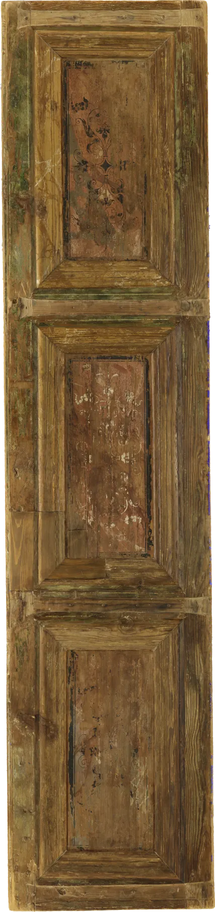
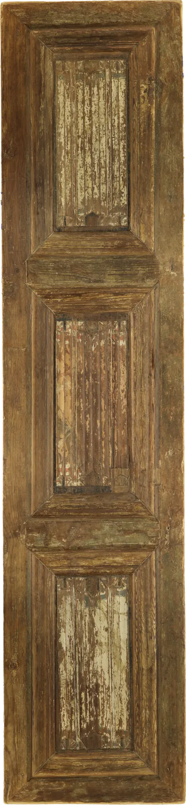
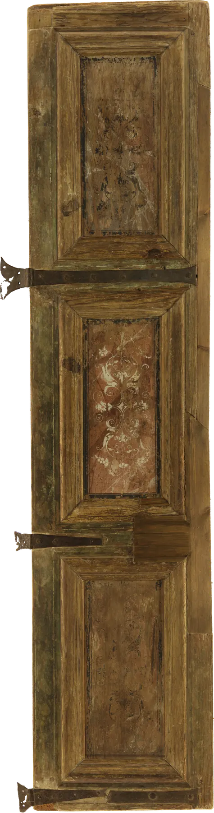
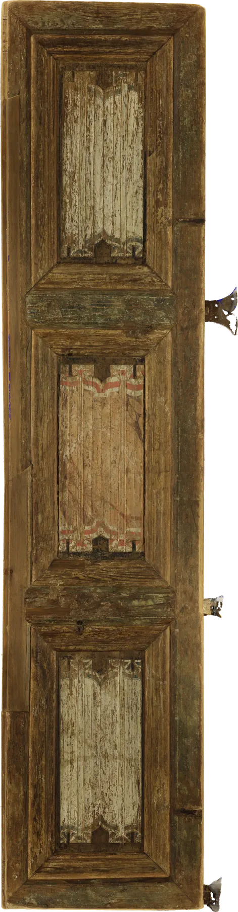
Detalles
Recreación
Reconstruir lo que el tiempo borró
De cuarenta fotografías por cara a un modelo tridimensional, y de ahí a una propuesta de cómo pudo verse la puerta cuando su policromía estaba completa.
Documentar una superficie policromada plantea un problema doble: hay que registrar el color, pero también el relieve. Una fotografía frontal aplasta la talla; un dibujo técnico pierde la pintura. La fotogrametría resuelve las dos cosas a la vez, y de paso produce algo que ninguna fotografía convencional puede dar: una imagen métrica, sobre la que se puede medir.
La captura
Las tomas se realizaron con una cámara Canon EOS 2000D equipada con un objetivo de 18–55 mm, montada sobre trípode y con iluminación de dos focos LED. Las hojas se colocaron cuidadosamente sobre una plancha en el suelo y se tomaron alrededor de cuarenta fotografías por cara y hoja, recorriendo el perímetro a varias alturas y manteniendo un solape suficiente entre tomas consecutivas.
El procesado se llevó a cabo en RealityScan, generando dos modelos de alta calidad por cada hoja. A partir de ellos se obtuvieron las ortofotografías de gran resolución que se emplean a lo largo de todo el estudio: cuatro proyecciones ortogonales —anterior y posterior de cada hoja— en las que la geometría real de la pieza sustituye a la perspectiva de la cámara.
El modelo tridimensional no ha sido sólo un producto de difusión. Ha funcionado como instrumento de contraste: cuando la reflectografía infrarroja mostró líneas oscuras que podían interpretarse como un dibujo subyacente, fue la comparación con el relieve del modelo la que permitió descartar esa lectura y atribuirlas a la topografía de la superficie. Un dato de imagen se corrigió con un dato de forma.
Recorrer ese modelo en el visor 3D
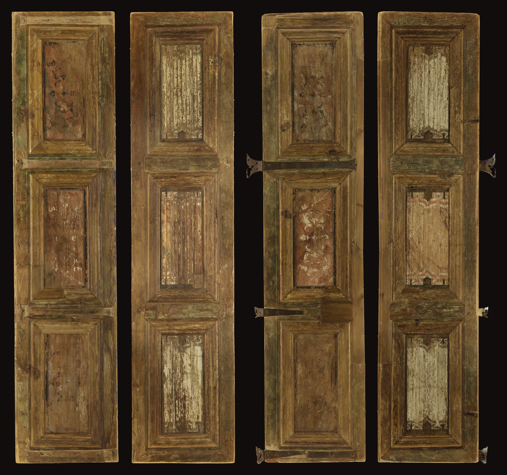
La recreación del estado original
Con la información reunida —la distribución de los restos de policromía, la lectura de los marmoleados, el trazado completo de los motivos vegetales recuperado a partir de las zonas mejor conservadas y la posición de los herrajes— se ha elaborado una propuesta visual del posible aspecto original de la puerta.
La recreación devuelve a los largueros y travesaños su imitación de mármol verde, restituye los fondos rojos de los cuarterones y completa los motivos vegetales que hoy sólo se conservan de forma fragmentaria. Los herrajes se representan completos, en las cuatro posiciones que la evidencia material permite deducir.
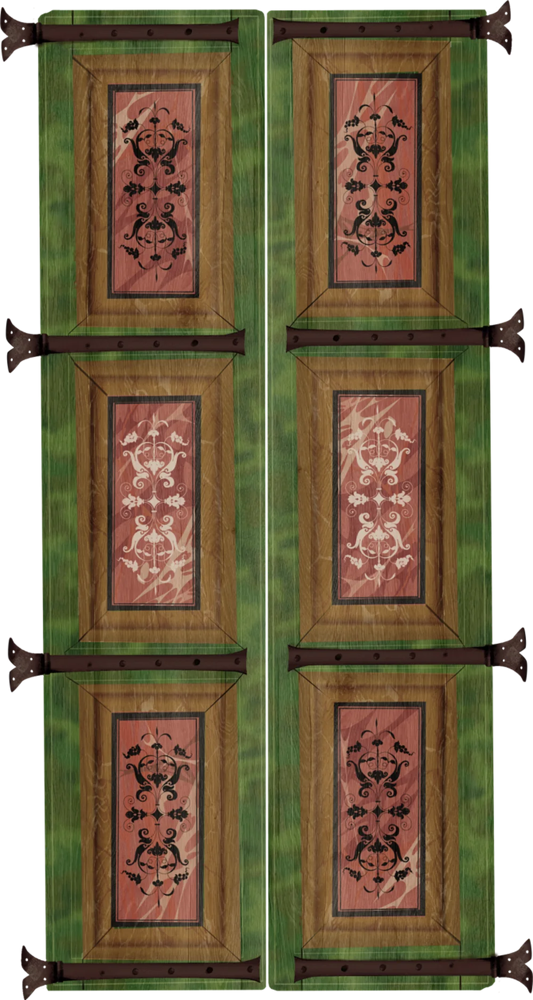
El motivo vegetal que ocupa los cuarterones centrales se ha vectorizado a partir de las zonas donde el dibujo se conserva mejor. Es una composición simétrica de tallos enrollados, hojas y frutos, de tradición clasicista, resuelta en blanco sobre el fondo rojo y perfilada con un trazo negro fino.
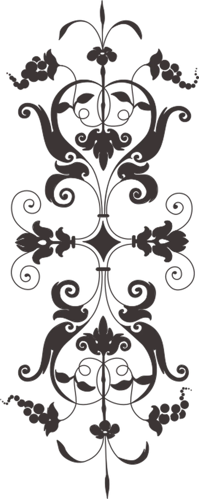
Del resto conservado a la propuesta
Modelo tridimensional
Las dos hojas, tal como son
El modelo que sirvió para obtener las ortofotografías puede recorrerse aquí tal cual: las dos hojas con su geometría real y su color, girables, ampliables y abribles. La vista de volumen retira la policromía y deja sólo el relieve —que es lo que permitió descartar el supuesto dibujo subyacente— y la luz rasante se orienta a voluntad para leer la talla y las pérdidas de materia igual que se hace delante de la pieza.
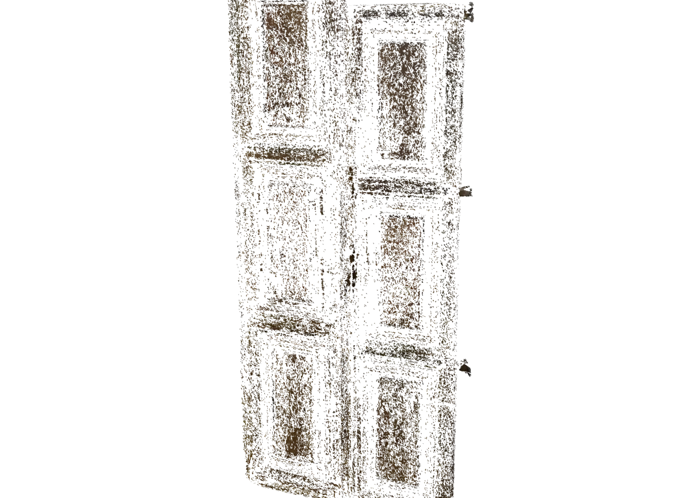
Descarga bajo demanda y por niveles: 0,7 MB de vista previa y 8 MB de modelo estándar, con texturas de 4096 px. La calidad máxima —la malla completa, 1,9 millones de triángulos, 15 MB— se descarga sólo si se pide. Requiere WebGL.
Fotografía técnica
La misma madera, cuatro luces distintas
Ultravioleta e infrarrojo no atraviesan la materia por arte de magia: la interrogan. Cada rango del espectro devuelve una respuesta distinta, y esa diferencia es el dato.
La naturaleza de los bienes culturales exige metodologías que obtengan el máximo de información comprometiendo lo mínimo posible la integridad del objeto. Por eso el examen se organiza de forma escalonada: primero técnicas no invasivas de observación y documentación global, después técnicas puntuales cuando hacen falta, y sólo al final —si no queda otro camino— la toma de micromuestras. Este estudio se ha mantenido íntegramente en el primer escalón.
La ventaja de las técnicas de imagen es que registran información espacial de toda la superficie a la vez. Permiten relacionar materiales, alteraciones, pérdidas, intervenciones y elementos constructivos con su posición exacta sobre la obra. Ninguna de ellas identifica por sí sola la composición de un material: hay que leerlas de forma complementaria, y ése es exactamente el planteamiento aquí.
El equipo
La campaña de fotografía técnica se realizó el 3 de marzo de 2026 a cargo del grupo de investigación Color Imaging Lab de la Universidad de Granada. Se empleó una cámara Nikon D850 modificada (UVIS-VNIR), es decir, con el filtro de corte infrarrojo del sensor retirado para que registre desde el ultravioleta hasta el infrarrojo cercano. La configuración y los juegos de filtros siguen las indicaciones de Cultural Heritage Science Open Source (CHSOS), que desarrolla y distribuye instrumentación portátil y protocolos abiertos para la investigación del patrimonio: concretamente, el Antonello multispectral filter set y el Robertina technical photography filter set.
Dada la longitud de la puerta, la cámara se montó sobre un trípode deslizante instalado en un carril, con el objeto apoyado de forma que los planos quedasen perpendiculares al eje óptico. Se realizaron unas seis fotografías por cara y hoja, con solape suficiente para el cosido posterior. La iluminación principal fueron dos focos halógenos Arrilite 750 Plus; para las modalidades ultravioleta se usaron dos focos Fabrizio UV con emisión a 365 nm. El revelado se hizo en RawTherapee con los perfiles del propio CHSOS, y el cosido en AutoPano Giga.
Cambia la banda, cambia la lectura
El selector siguiente muestra la cara anterior de la Hoja 2 registrada en los cuatro rangos. Las imágenes están alineadas entre sí, de modo que al cambiar de banda sólo cambia la respuesta del material, no el encuadre.
Qué mirar: en UVF, los injertos de madera se encienden respecto al soporte original y aparecen manchas blanquecinas de morfología nubosa. En UVR, los injertos de los largueros se oscurecen más que los de los travesaños. En IRR, el fondo rojo casi desaparece mientras los trazos negros se refuerzan hasta volverse el elemento dominante de la imagen.
Fluorescencia ultravioleta (UVF)
La superficie se ilumina con dos lámparas de 365 nm y la cámara registra, mediante filtros que dejan pasar sólo el rango visible, la luz que ciertos materiales emiten al ser excitados. Barnices, adhesivos, algunos pigmentos, repintes y depósitos superficiales generan patrones de fluorescencia característicos que permiten diferenciar intervenciones, zonas de limpieza o alteraciones.
En la cara anterior de la Hoja 1 se aprecia una fluorescencia localizada en determinadas zonas de uno de los cuarterones, compatible con restos de un material superficial envejecido —un barniz— o con acumulaciones de materiales orgánicos, adhesivos o productos de intervenciones anteriores. Pero la fluorescencia también se ve condicionada por la suciedad superficial y por el distinto estado de las capas pictóricas: la observación indica una diferencia material o superficial, no la naturaleza del material responsable.
Donde la técnica es más concluyente es en los injertos. Los añadidos de madera incorporados en la última intervención fluorescen de forma claramente distinta al soporte original en ambas hojas. Según el informe de restauración, se eliminaron los añadidos anteriores y se sustituyeron por piezas de pino curado, tintadas después con Xylazel color nogal para integrarlas cromáticamente. La diferencia observada puede deberse a la propia naturaleza y estado de conservación de la madera nueva, al tratamiento de coloración aplicado, o a ambos: no puede descartarse que alguno de los componentes del producto contribuya a la fluorescencia registrada.
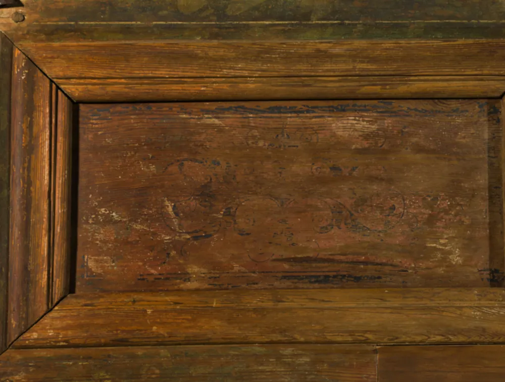
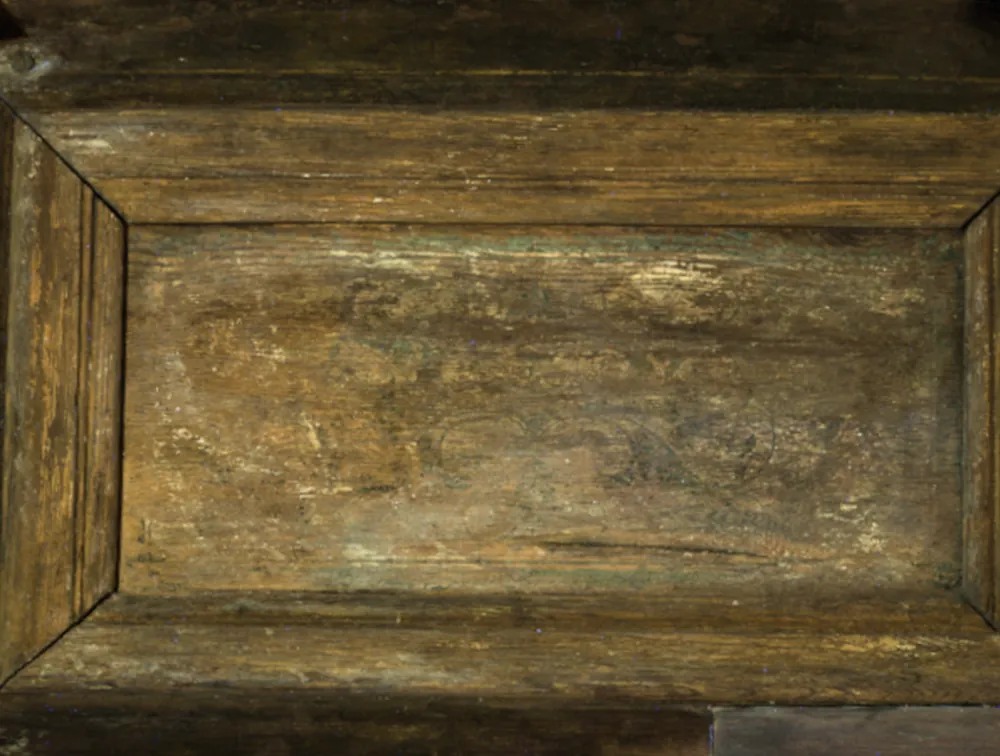
Observa: la fluorescencia dibuja áreas blanquecinas de contorno nuboso y distribución irregular que en luz visible pasan desapercibidas, y separa con nitidez las piezas de madera añadidas del soporte original.
Ultravioleta reflejado (UVR)
A diferencia de la fluorescencia, aquí la cámara registra la radiación ultravioleta que la superficie devuelve. La técnica resalta diferencias de absorción y reflexión entre materiales que en luz visible parecen iguales. Las imágenes resultantes son monocromáticas y se revelaron con el perfil «BW», que las convierte a escala de grises para realzar cambios sutiles de textura, abrasiones y depósitos superficiales.
El resultado más interesante afecta de nuevo a los injertos, pero de un modo inesperado. Aunque todos los añadidos se trataron con el mismo producto de coloración, los situados en los largueros presentan una absorción ultravioleta más acusada y se registran como zonas más oscuras que los de los travesaños. La repetición del patrón sugiere que no es casual: podría responder a una aplicación más intensa del tratamiento en los largueros, quizá para integrarlos cromáticamente con la madera circundante. También podría deberse a diferencias entre las propias piezas de madera —porosidad, orientación de la veta, densidad, estado superficial previo—. Las técnicas de imagen no permiten decidir cuál de los dos factores pesa más.
Complementariamente, el UVR incrementa el contraste de algunos restos de pintura blanca frente a la madera expuesta y a los fondos rojizos, lo que facilita la lectura de fragmentos decorativos que en visible resultan poco evidentes.
Reflectografía infrarroja (IRR)
El infrarrojo se registra por encima de los 760 nm. Su interés reside en que ciertas capas pictóricas se vuelven parcialmente transparentes en ese rango, de modo que la técnica puede revelar dibujos subyacentes, inscripciones o correcciones. Como lo relevante son las diferencias de reflectancia y no el color, las imágenes originales —que mostraban una dominante rosácea— se revelaron con el perfil «BW» a escala de grises, ajustando niveles de contraste y exposición.
Los trazos negros de la decoración se registran con una absorción infrarroja evidente y aparecen intensamente oscuros. Ese comportamiento es compatible con el empleo de un pigmento negro a base de carbón, ya que estos materiales absorben con fuerza la radiación infrarroja. Es uno de los resultados más consistentes del estudio, y volverá a confirmarse por vía espectral.
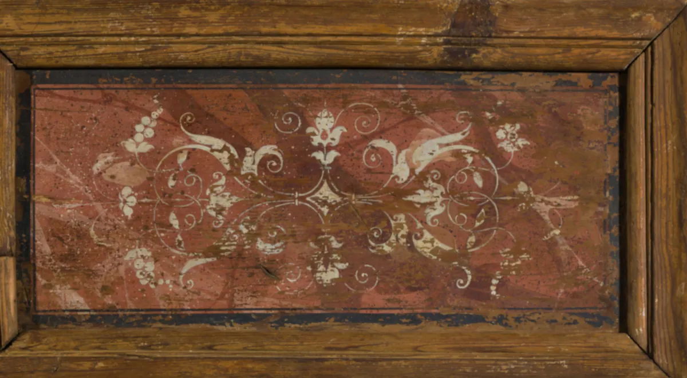
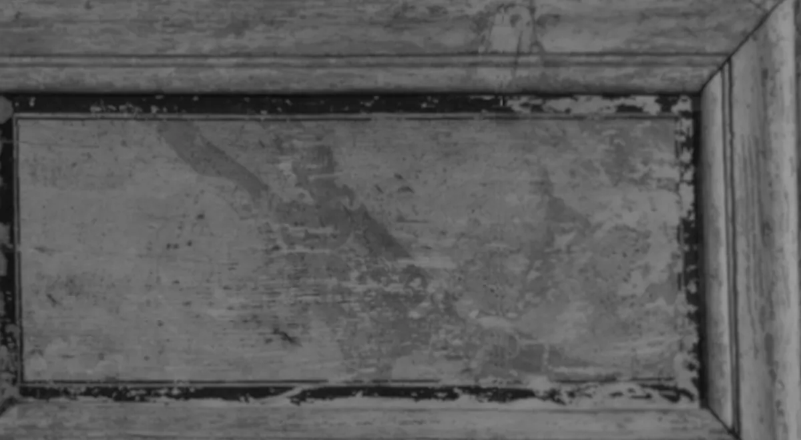
Observa: el rojo claro del fondo y los tonos rojos intermedios se vuelven prácticamente invisibles en infrarrojo, mientras que los perfiles negros del cuarterón y del motivo vegetal se refuerzan. Las manchas de rojo más oscuro, en cambio, siguen siendo perceptibles: esa diferencia de comportamiento es la que llevó al análisis hiperespectral.
El dibujo subyacente que no era
En los cuarterones centrales de las caras anteriores, la reflectografía reveló formas lineales oscuras que en una primera lectura sugerían un dibujo preparatorio bajo la policromía. La hipótesis era razonable: si el trazado previo se hubiera hecho con un material carbonoso, aparecería exactamente así.
La comparación directa con la fotografía en visible, y sobre todo con el relieve del modelo tridimensional, obligó a descartarla. Las líneas coinciden con el contorno, el relieve y la disposición de la propia pintura, y con depresiones y alteraciones físicas visibles en la superficie. Su apariencia en infrarrojo se relaciona con la topografía del soporte y de la capa pictórica, no con una capa situada bajo ella.
Algunas de esas incisiones son suficientemente regulares como para recordar letras, signos o trazos hechos de manera intencionada. Podrían vincularse a actos de vandalismo o a daños mecánicos producidos a lo largo de la historia material de la pieza, pero no hay elementos para ir más allá.
Qué aporta y qué no aporta cada técnica
| Técnica | Tipo de información | Principal aportación | Principal límite |
|---|---|---|---|
| VIS | Espacial y documental | Estado actual, color aparente, lagunas, herrajes e intervenciones visibles | No identifica materiales |
| UVF | Fluorescencia visible inducida por UV | Posibles barnices, tratamientos, adhesivos, retoques o diferencias superficiales | Respuesta no específica y condicionada por envejecimiento, suciedad y espesor |
| UVR | Reflectancia ultravioleta | Diferencias de absorción y reflectancia en superficie | No identifica por sí sola pigmentos ni acabados |
| IRR | Reflectancia infrarroja | Trazos oscuros, diferencias de capas, mayor legibilidad de ciertos restos pictóricos | La penetración y el contraste dependen de los pigmentos, el espesor y el rango del sensor |
| HSI | Espacial y espectral | Clasificación y mapeado de áreas con respuestas espectrales distintas | Requiere procesamiento y validación con referencias o análisis complementarios |
| Puntuales | Elemental o molecular | Confirmación de hipótesis materiales en puntos seleccionados | Cobertura espacial limitada; algunas requieren contacto o micromuestra |
Las cuatro modalidades, cara a cara
Imagen hiperespectral
Un espectro en cada píxel
Donde la fotografía técnica da cuatro respuestas, la imagen hiperespectral da centenares. El problema deja de ser ver y pasa a ser clasificar.
La fotografía técnica permitió localizar áreas de interés y poner de manifiesto diferencias de respuesta óptica entre restos de policromía, madera original, injertos y materiales superficiales. La imagen hiperespectral amplía esa aproximación registrando múltiples bandas espectrales estrechas para cada punto de la superficie. El resultado es un cubo de datos: dos dimensiones espaciales y una tercera dimensión espectral, de modo que cada píxel lleva asociado un espectro de reflectancia completo.
La captura
La documentación hiperespectral se realizó con una cámara Specim IQ (VNIR), sensible aproximadamente entre 400 y 1000 nm, montada sobre el mismo carril de barrido empleado en la fotografía técnica. Se utilizó el modo de reflectancia (REF), de forma que las imágenes representan la reflectancia espectral del objeto con independencia de la sensibilidad del sensor y de la fuente de iluminación.
El procedimiento exige dos referencias previas: una toma con el objetivo tapado, para restar la señal propia del sensor, y otra con un blanco de referencia colocado sobre el objeto. A partir de ambas se aplica una corrección de campo plano (flat-field correction), que compensa las variaciones de iluminación y de sensibilidad del sensor y convierte los datos en cubos de reflectancia aptos para el análisis. De esos cubos se generaron además imágenes en falso RGB, calculadas a partir de la propia información espectral, para disponer de una visualización aproximada a los colores reales.
Se obtuvieron veinticuatro cubos en total, que se llevaron al programa Spectronon para su análisis.
De la superficie a la firma
En una primera fase se definieron regiones de interés (ROI) sobre los cubos en los que los materiales se distinguen visualmente, utilizando herramientas de selección manual y automática y buscando áreas de color y material homogéneos. De cada ROI se extrajeron dos cosas: un espectro medio, calculado a partir de todos los píxeles que componen el área, y un «minicubo» que conserva la información espectral completa de esa región.
El resultado son veintinueve firmas espectrales, organizadas por familia cromática y codificadas de forma que el nombre indique qué representa cada una: el material o color, un número correlativo y un sufijo que señala si la firma es representativa de una zona homogénea (_Rep), corresponde a un área de mezcla, abrasión, superposición o suciedad (_Mix), o procede de madera original (_Org) o de injerto (_Inj).
| Código | Cubo | Color / material | Zona |
|---|---|---|---|
| Madera | |||
| Md01_Org | 017 | Madera original | Soporte original |
| Md02_Org | 015 | Madera original | Soporte original |
| Md03_Inj | 003 | Madera de injerto | Añadido de la última intervención |
| Md04_Org | 003 | Madera original | Lagunas del fondo marmoleado rojo |
| Rojo | |||
| Ro01_Rep | 003 | Rojo de fondo | Fondo marmoleado rojo, cara lisa |
| Ro02_Rep | 009 | Rojo de fondo | Fondo de pergamino marmoleado rojo |
| Ro03_Rep | 009 | Rojo intenso | Banda roja sobre pergamino marmoleado rojo |
| Ro04_Mix | 003 | Rojo medio | Manchas rojas sobre fondo marmoleado rojo |
| Ro05_Mix | 009 | Rojo medio | Manchas rojas sobre pergamino marmoleado rojo |
| Ro06_Mix | 003 | Rojo claro | Manchas rojas claras sobre fondo marmoleado rojo |
| Ro07_Mix | 009 | Rojo claro | Manchas rojas claras sobre pergamino marmoleado rojo |
| Ro08_Mix | 003 | Rojo oscuro | Manchas rojas oscuras sobre fondo marmoleado rojo |
| Ro09_Mix | 009 | Rojo oscuro | Manchas rojas oscuras sobre pergamino marmoleado rojo |
| Blanco | |||
| Bl01_Rep | 008 | Blanco de fondo | Fondo de pergamino marmoleado blanco |
| Bl02_Rep | 012 | Blanco de fondo | Fondo de pergamino marmoleado blanco (menor reflectancia que Bl01) |
| Bl03_Rep | 003 | Blanco «puro» | Dibujo blanco sobre fondo marmoleado rojo |
| Bl04_Rep | 009 | Blanco «puro» | Banda blanca sobre pergamino marmoleado rojo |
| Bl05_Mix | 013 | Blanco rojizo | Manchas blancas rojizas sobre fondo marmoleado rojo |
| Bl06_Mix | 013 | Blanco transparente | Manchas blancas sobre marmoleado marrón |
| Verde | |||
| Ve01_Rep | 001 | Verde medio | Marmoleado verde |
| Ve02_Mix | 001 | Verde claro | Línea fina que rodea el marmoleado verde |
| Ve03_Mix | 001 | Verde oscuro | Marmoleado verde |
| Ve04_Mix | 013 | Verde oscuro rojizo | Manchas verdosas sobre marmoleado rojo |
| Marrón | |||
| Mr01_Rep | 013 | Marrón de fondo | Fondo marmoleado marrón |
| Mr02_Mix | 012 | Marrón claro | Manchas marrones sobre pergamino marmoleado blanco |
| Mr03_Mix | 013 | Marrón oscuro | Manchas marrones oscuras sobre marmoleado marrón |
| Negro | |||
| Ng01_Rep | 003 | Negro «puro» | Borde negro sobre marmoleado rojo |
| Ng02_Mix | 013 | Negro «puro» | Dibujo negro sobre fondo marmoleado rojo |
| Azul | |||
| Az01_Rep | 008 | Azul «puro» | Banda azul sobre pergamino marmoleado blanco |
Cuatro algoritmos para separar materiales
Con esas firmas como referencia se aplicaron distintos métodos de clasificación y análisis espectral sobre los cubos, con el objetivo de identificar y diferenciar los materiales de la puerta y mapear su distribución.
SAM
Compara el espectro de cada píxel con los espectros de referencia midiendo el ángulo entre ambos: cuanto menor es el ángulo, mayor la similitud. Se usaron diez firmas como endmembers, ajustando la tolerancia de cada una.
LDA
Se entrena con los minicubos de quince ROI. Agrupa las respuestas similares dentro de una misma clase y aumenta la distancia entre clases distintas, lo que mejora la discriminación entre materiales de firma espectral próxima.
LR
Modelo estadístico que, pese al nombre, funciona como clasificador lineal: estima la probabilidad de que un píxel pertenezca a una clase. Rápido y potente, se aplicó como contraste de los dos anteriores.
SU
Desmezcla espectral: evalúa si un color observado puede explicarse como combinación de varias firmas de referencia. Se aplicó sobre una mancha de rojo oscuro concreta, con dos y luego tres endmembers.
Lo que devolvió cada mapa
SAM ofreció una segmentación moderada y coherente con la documentación visual. Distinguió con solvencia la madera de injerto (Md03_Inj) de la original (Md01_Org). Localizó con precisión las firmas de rojo en el fondo marmoleado, separando con éxito varios tonos, incluida la mancha de rojo oscuro que después se analizaría por desmezcla. El negro (Ng01_Rep) se concentró en los bordes del fondo marmoleado rojo, en concordancia con la elevada absorción infrarroja observada previamente en IRR. Y el blanco (Bl03_Rep) delimitó los motivos vegetales claros sobre el fondo rojo, apareciendo también en ciertas zonas del marmoleado verde, sobre todo en la línea fina que lo rodea.
Sus límites también son claros. Las áreas que el algoritmo no consigue asignar a ninguna de las diez firmas quedan sin clasificar, y hay confusiones puntuales entre categorías espectralmente próximas: en la moldura que rodea el fondo rojo aparecen píxeles clasificados como marrones, rojos, verdes y madera original a la vez. La presencia de marrón es lógica; la de rojos y verdes podría deberse a variaciones del estado de la superficie que desplazan ligeramente la respuesta espectral hacia firmas cromáticas vecinas.
LDA produjo una segmentación más marcada, con fronteras muy definidas entre madera, injerto y policromía. Pero tiende a sobreextender determinadas clases: el negro se extiende de forma poco realista a la práctica totalidad del herraje, y el verde invade la moldura marrón. Peor aún, el mapa de verdes presenta lagunas en el propio larguero superior, precisamente donde se conserva la policromía verde original. El color queda subrepresentado justo donde debería detectarse con mayor consistencia. En cambio, el blanco delimitó con fidelidad razonable los motivos vegetales, y los rojos reconocieron tanto el fondo como las manchas del marmoleado con una definición similar a la observada en visible.
SU se aplicó sobre una mancha de rojo oscuro detectada en el fondo marmoleado rojo del cuarterón central de la cara anterior de la Hoja 2, dentro del cubo Puertas_003. Con dos endmembers —una firma de rojo de fondo (Ro01_Rep) y una de negro (Ng01_Rep)— la mancha aparece grisácea en ambos mapas individuales, lo que indica contribución de las dos firmas; la composición RGB lo confirma al combinar píxeles amarillos y azules. Un segundo intento incorporó un tercer endmember de madera procedente del fondo del cuarterón (Md04_Org), y el mapa resultante quedó más limpio: la madera se aisló en su propio canal y la mancha oscura siguió mostrando píxeles de rojo y de negro.
Los límites de cada método
SAM ofrece una segmentación moderada y fiel a la documentación visual, pero no admite más de diez espectros para componer sus mapas, de modo que hay que excluir firmas y quedan lagunas. LDA extrapola clases a áreas de respuesta espectral parecida aunque el material no sea el correcto. Y SU es un algoritmo potente pero difícil de manejar: en este estudio su uso se limitó deliberadamente a tres endmembers para mantener los resultados interpretables. Ninguno de los tres sustituye a un análisis puntual; todos, juntos, acotan mucho dónde tendría sentido hacerlo.
Las zonas analizadas
Resultados
Ocho cosas que sabemos ahora y antes no
Ninguna de estas conclusiones ha exigido tocar la pieza. Todas proceden de comparar cómo responde su superficie a distintas regiones del espectro electromagnético, y de contrastar esas respuestas entre sí.
Un negro a base de carbón
Los trazos negros de la decoración absorben intensamente la radiación infrarroja y aparecen muy oscuros en IRR. El comportamiento es compatible con un pigmento negro a base de carbón, y la clasificación SAM lo confirma al concentrar la firma Ng01_Rep exactamente en los bordes del fondo marmoleado rojo.
Dos rojos que no son el mismo rojo
El rojo claro del fondo y los tonos intermedios se vuelven casi invisibles en infrarrojo, mientras que las manchas de rojo más oscuro permanecen perceptibles. La desmezcla espectral sugiere que ese rojo oscuro combina un componente rojo con otro de comportamiento espectral próximo al negro.
No hay dibujo subyacente
Las líneas oscuras que la reflectografía revela en los cuarterones centrales no corresponden a un trazado preparatorio. Coinciden con el relieve y con depresiones físicas del soporte, como demostró la comparación con el modelo tridimensional. Es topografía, no una capa oculta.
Tres capas, en este orden
Primero los colores planos de los fondos; sobre ellos, los veteados del marmoleado; por último, los dibujos y delineados. En las lagunas no se distingue una capa de preparación diferenciada, aunque eso no permite descartar una capa de cola o apresto sin análisis estratigráfico.
Los injertos se delatan en las cuatro luces
Las piezas de pino curado añadidas en 2018 y tintadas con Xylazel color nogal se separan del soporte original en VIS, UVF, UVR e IRR, y también en las clasificaciones SAM y LDA. Su respuesta óptica es sistemáticamente distinta, aunque las técnicas de imagen no permiten aislar si pesa más la madera o el tinte.
El tinte no se aplicó por igual
Los injertos situados en los largueros absorben más ultravioleta y se registran más oscuros que los de los travesaños, pese a haber recibido el mismo producto. El patrón se repite, lo que apunta a una aplicación más intensa en los largueros o a diferencias de porosidad y veta entre piezas.
Una cata de limpieza documentada
En el primer cuarterón de la cara anterior de la Hoja 1, un sector rectangular delimitado por dos líneas nítidas responde de forma distinta al resto en visible y sobre todo en UVF. El informe de restauración lo identifica como un ensayo de limpieza: la imagen técnica y el archivo coinciden.
Marcas que podrían ser signos
Algunas incisiones de la superficie tienen una regularidad que recuerda a letras o trazos intencionados, posiblemente vinculados a actos de vandalismo o a daños mecánicos sufridos a lo largo de su historia. La comparación multimodal permite descartar que sean pintura, pero no ir más allá.
Esta puerta pertenece a ese conjunto de piezas guardadas en los fondos de museo que rara vez se muestran y cuya complejidad material y simbólica queda reservada al ámbito especializado. Documentarla sin tocarla abre la posibilidad de mostrarla sin comprometer su conservación: las mismas herramientas que han permitido estudiarla —macrofotografía, UVF, UVR, IRR e imagen hiperespectral— se convierten aquí en instrumentos de mediación.